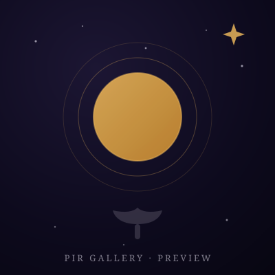
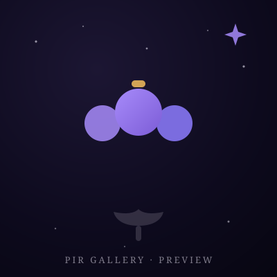
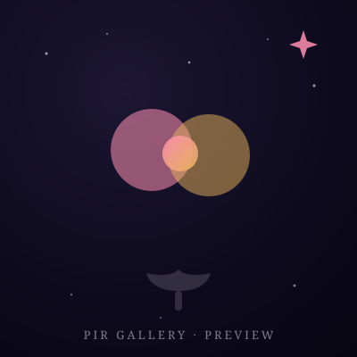
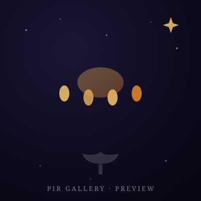
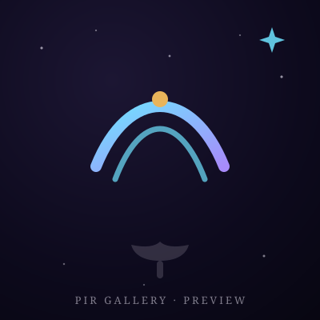
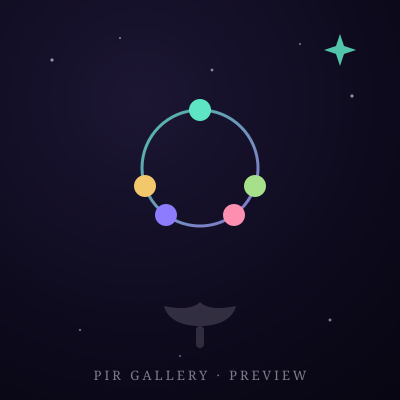

The PIR® Gallery
The photo albums of Psychedelics In Recovery™ – PIR® — not tied to any one event. Conventions, gatherings, service years, whatever the fellowship makes next: every album lives here, served straight from the fellowship's repository, fast anywhere in the world, and costing nothing but care. Born from a WhatsApp request that went wonderfully rogue.
Illustrated previews — as albums come in, real photos take their places here.






How this gallery began
It started with a simple favor: getting Anne R.'s Pixieset album onto gallery.psychedelicsinrecovery.org for the Inaugural Convention photos. One WhatsApp thread later, the fellowship had a shared Google Drive gathering everyone's photos from Denver — and a decision: the photos of our recovery deserve a home we own. So the fellowship built this gallery on GitHub: no platform, no expiry, no cost — the Pixieset album that sparked it is woven right in below.
The albums
Add your own ↗Every album is a folder in the repository and a card below. Featured albums glow a little brighter.
Add your photos
Were you there? Four paths, all easy: send your photos to a trusted servant and they will place them with care, drop them in the shared Drive folder, use GitHub's own web interface from your browser (no terminal needed), or walk the full process yourself — naming, captions, credits and all — in the walkthrough. If you would rather not appear in a photo, tell a trusted servant and it comes down immediately: the fellowship's consent comes first.